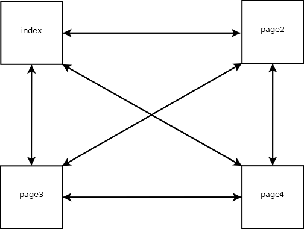

1. Introduction
Bienvenue sur notre site dédié à l'univers des images et des métadonnées ! Que vous soyez photographe, graphiste, étudiant en multimédia ou simplement curieux, ce site a pour objectif de vous éclairer sur les concepts fondamentaux liés aux images numériques et aux métadonnées qui les accompagnent.
Dans un monde où les images sont omniprésentes, il est essentiel de comprendre ce qu'elles représentent, comment elles sont structurées et quelles informations supplémentaires elles peuvent contenir. les métadonnées , souvent invisibles à l'œil nu, jouent un rôle crucial dans la gestion, l'organisation et l'exploitation des fichiers visuels. Elles permettent de stocker des détails techniques, des informations descriptives, voire des données de localisation, rendant ainsi les images plus riches et plus utiles.
Sur ce site, nous explorerons en détail :
- Ce qu'est une image : ses types, ses caractéristiques et ses formats.
- Ce que sont les métadonnées : leur définition, leur utilité et leurs différents types, notamment les formats EXIF et XMP.
2. Qu'est-ce qu'une image ?
-
Definition :
Une image est une représentation visuelle d'un objet, d'une scène ou d'une idée, capturée ou créée numériquement ou physiquement. Dans le contexte numérique, une image est un fichier contenant des données visuelles, souvent
sous forme de pixels, qui peuvent être affichées sur un écran ou imprimées. -
Types d'images :
- Images matricielles (bitmap) : Composées de pixels (points colorés). Exemples : JPEG, PNG, GIF, BMP.
- Images vectorielles : Composées de formes géométriques (lignes, courbes, etc.). Exemples : SVG, AI, EPS.
- Images 3D : Représentations tridimensionnelles utilisées en modélisation 3D ou en jeux vidéo.
-
Caractéristiques d'une image numérique :
- Résolution :
- Nombre de pixels par unité de longueur (ex : 300 DPI pour l'impression).
- Taille :
- Dimensions en pixels (ex : 1920x1080).
- Format :
- Type de fichier (ex : JPEG, PNG, TIFF).
- Couleur :
- Profondeur de couleur (ex : 8 bits, 16 bits) et espace colorimétrique (ex : sRGB, Adobe RGB).
- Titre :
- Il permet d'identifier et de décrire succinctement le contenu de l'image
- Auteur:
- C'est la personne ou l'entité qui a créé l'image. Cela peut être un photographe, un graphiste, un artiste, ou une organisation.
3. Qu'est-ce qu'une métadonnée ?
-
Définition :
Une métadonnée est une donnée qui décrit ou fournit des informations sur une autre donnée. En d'autres termes, ce sont des informations supplémentaires qui accompagnent un fichier ou un contenu pour en faciliter la compréhension, l'organisation, la recherche ou la gestion.
-
Exemples de métadonnées :
- image : Date de création, dimensions, résolution, appareil utilisé, paramètres de capture, etc.
- document texte : Auteur, titre, date de modification, mots-clés, etc.
- vidéo : Durée, format, codec, résolution, etc.
-
Utilité des métadonnées :
- Organisation :
- Permet de classer et de retrouver facilement des fichiers
- Description :
- Fournit des informations contextuelles sur le contenu.
- Interopérabilité :
- Facilite l'échange et l'utilisation des fichiers entre différents systèmes ou logiciels
- Gestion des droits :
- Peut inclure des informations sur les droits d'auteur ou les licences.
-
Types de métadonnées :
- EXIF :
- Exchangeable Image File Format
- XMP :
- Extensible Metadata Platform
4. Plan du site
Voici un schema détaillé du plan du site :
